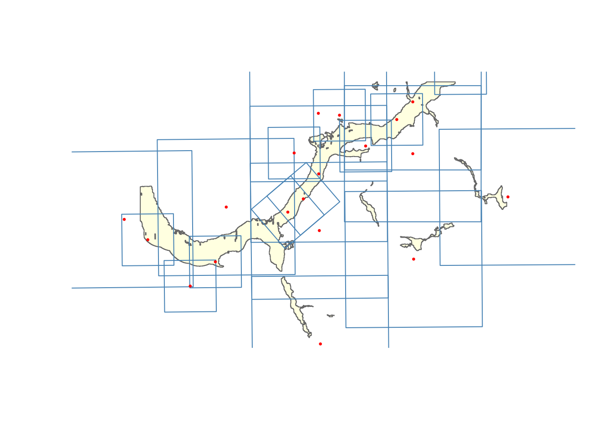
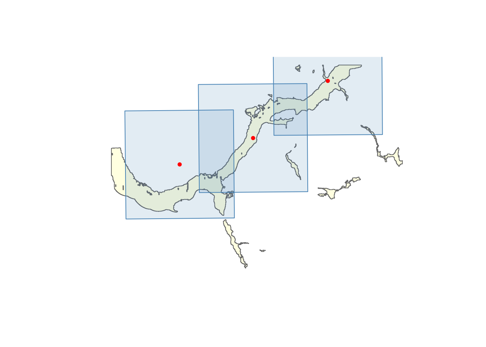
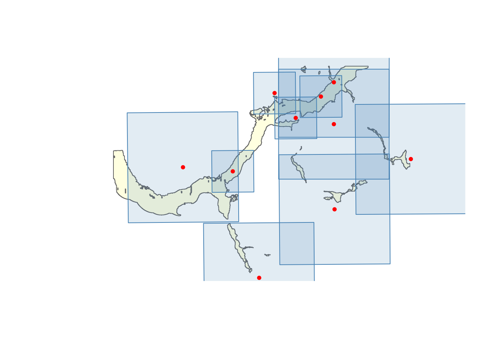
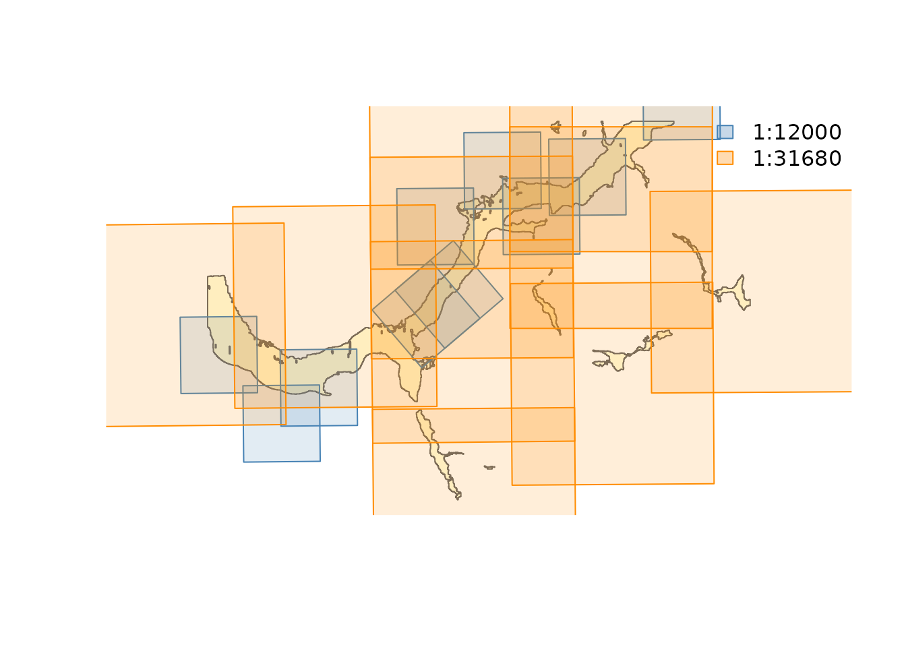

This vignette demonstrates the full fly pipeline using
bundled test data from the Upper Bulkley River floodplain near Houston,
BC. The data includes 1968 airphoto centroids at two scales (1:12,000
and 1:31,680).
library(fly)
library(sf)
#> Linking to GEOS 3.12.1, GDAL 3.8.4, PROJ 9.4.0; sf_use_s2() is TRUE
centroids <- st_read(system.file("testdata/photo_centroids.gpkg", package = "fly"), quiet = TRUE)
aoi <- st_read(system.file("testdata/aoi.gpkg", package = "fly"), quiet = TRUE)Footprint estimation
fly_footprint() converts point centroids into
rectangular polygons representing estimated ground coverage. The
standard 9” x 9” (228 mm) negative used by BC aerial survey cameras
produces a footprint width of 9 * scale * 0.0254 metres.
The 9x9 format is the default (negative_size = 9) and is
correct for standard BC catalogue photography. The full BC Air Photo
Database records camera focal length per roll, but this field is not
available in the simplified centroid data — override
negative_size if working with non-standard format
photography.
Note that footprints assume flat terrain beneath the aircraft. On
slopes the true ground coverage differs — downhill slopes produce a
larger actual footprint, uphill slopes a smaller one. All coverage and
overlap numbers downstream inherit this approximation. Figure
@ref(fig:fig-footprint) shows the estimated footprints for all 20
photos. Notice that some centroids fall outside the AOI while their
footprints still overlap it — fly_filter() with
method = "footprint" catches these edge cases that a simple
centroid-in-polygon filter would miss.
footprints <- fly_footprint(centroids)
plot(st_geometry(aoi), col = "lightyellow", border = "grey40")
plot(st_geometry(footprints), border = "steelblue", add = TRUE)
plot(st_geometry(centroids), pch = 20, cex = 0.5, col = "red", add = TRUE)
Estimated photo footprints (blue rectangles) and centroids (red dots) overlaid on the Upper Bulkley River floodplain AOI.
fp_result <- fly_filter(centroids, aoi, method = "footprint")
ct_result <- fly_filter(centroids, aoi, method = "centroid")
knitr::kable(data.frame(
Method = c("footprint", "centroid"),
Photos = c(nrow(fp_result), nrow(ct_result)),
Description = c("Footprint overlaps AOI", "Centroid inside AOI")
), caption = "Comparison of spatial filtering methods.")| Method | Photos | Description |
|---|---|---|
| footprint | 20 | Footprint overlaps AOI |
| centroid | 7 | Centroid inside AOI |
Summary statistics
fly_summary() reports footprint dimensions and date
ranges by scale.
fly_summary(centroids)
#> # A tibble: 2 × 6
#> scale photos footprint_m half_m year_min year_max
#> <chr> <int> <dbl> <dbl> <int> <int>
#> 1 1:12000 10 2743 1372 1968 1968
#> 2 1:31680 10 7242 3621 1968 1968Coverage analysis
fly_coverage() computes what percentage of the AOI is
covered by photo footprints, grouped by any column.
fly_coverage(centroids, aoi, by = "scale")
#> Spherical geometry (s2) switched off
#> Spherical geometry (s2) switched on
#> # A tibble: 2 × 4
#> scale n_photos covered_km2 coverage_pct
#> <chr> <int> <dbl> <dbl>
#> 1 1:12000 10 15.1 60.7
#> 2 1:31680 10 24.8 100Photo selection
fly_select() has two modes:
-
mode = "minimal"— fewest photos to reach target coverage -
mode = "all"— every photo whose footprint touches the AOI
Minimal selection
selected <- fly_select(centroids, aoi, mode = "minimal", target_coverage = 0.80)
#> Spherical geometry (s2) switched off
#> Selecting photos (target: 80% coverage)...
#> 3 photos -> 81.6% coverage
#> Selected 3 of 20 photos for 81.6% coverage
#> Spherical geometry (s2) switched on
selected[, c("airp_id", "scale", "selection_order", "cumulative_coverage_pct")]
#> Simple feature collection with 3 features and 4 fields
#> Geometry type: POINT
#> Dimension: XY
#> Bounding box: xmin: -126.6796 ymin: 54.41035 xmax: -126.5269 ymax: 54.46049
#> Geodetic CRS: WGS 84
#> airp_id scale selection_order cumulative_coverage_pct
#> 11 697358 1:31680 1 41.0
#> 20 697329 1:31680 2 66.5
#> 12 697292 1:31680 3 81.6
#> geom
#> 11 POINT (-126.6796 54.41035)
#> 20 POINT (-126.6039 54.42617)
#> 12 POINT (-126.5269 54.46049)Figure @ref(fig:fig-minimal) shows the greedy minimal selection result.
sel_fp <- fly_footprint(selected)
plot(st_geometry(aoi), col = "lightyellow", border = "grey40")
plot(st_geometry(sel_fp), border = "steelblue", col = adjustcolor("steelblue", 0.15), add = TRUE)
plot(st_geometry(selected), pch = 20, col = "red", add = TRUE)
Minimal greedy selection — fewest photos to reach 80% AOI coverage.
Ensuring component coverage
When the AOI has multiple disconnected polygons (e.g. patchy
floodplain fragments), minimal selection optimizes total area and can
leave entire components uncovered. Use
component_ensure = TRUE to guarantee at least one photo per
component before running greedy selection:
# How many polygon components in our AOI?
n_components <- length(sf::st_cast(st_union(aoi), "POLYGON"))
cat("AOI has", n_components, "polygon components\n")
#> AOI has 34 polygon components
selected_ec <- fly_select(centroids, aoi, mode = "minimal",
target_coverage = 0.80, component_ensure = TRUE)
#> Spherical geometry (s2) switched off
#> Seeding 9 photos for component coverage...
#> 9 seed photos -> 78% coverage
#> Selecting photos (target: 80% coverage)...
#> 10 photos -> 90.1% coverage
#> Selected 10 of 20 photos for 90.1% coverage
#> Spherical geometry (s2) switched on
cat("Without component_ensure:", nrow(selected), "photos\n")
#> Without component_ensure: 3 photos
cat("With component_ensure: ", nrow(selected_ec), "photos\n")
#> With component_ensure: 10 photosCompare Figure @ref(fig:fig-minimal) with Figure @ref(fig:fig-components) — the component-ensured selection covers more of the disconnected floodplain fragments at the cost of a few extra photos.
sel_fp_ec <- fly_footprint(selected_ec)
plot(st_geometry(aoi), col = "lightyellow", border = "grey40")
plot(st_geometry(sel_fp_ec), border = "steelblue",
col = adjustcolor("steelblue", 0.15), add = TRUE)
plot(st_geometry(selected_ec), pch = 20, col = "red", add = TRUE)
Component-ensured selection — every disconnected AOI polygon gets at least one photo before greedy backfill.
All photos touching AOI
all_in_aoi <- fly_select(centroids, aoi, mode = "all")
#> Spherical geometry (s2) switched off
#> although coordinates are longitude/latitude, st_union assumes that they are
#> planar
#> although coordinates are longitude/latitude, st_intersects assumes that they
#> are planar
#> Selected 20 of 20 photos intersecting the AOI
#> Spherical geometry (s2) switched on
cat(nrow(all_in_aoi), "photos intersect the AOI\n")
#> 20 photos intersect the AOIOverlap analysis
fly_overlap() reports pairwise overlap between photo
footprints. Run it on same-scale subsets to understand coverage
quality.
photos_12k <- centroids[centroids$scale == "1:12000", ]
overlap_12k <- fly_overlap(photos_12k)
#> Spherical geometry (s2) switched off
#> Spherical geometry (s2) switched on
overlap_12k
#> # A tibble: 7 × 5
#> photo_a photo_b overlap_km2 pct_of_a pct_of_b
#> <int> <int> <dbl> <dbl> <dbl>
#> 1 699370 699365 2.05 27.2 27.2
#> 2 699370 699373 0.134 1.8 1.8
#> 3 699426 699425 3.92 52.1 52.1
#> 4 699396 699393 0.246 3.3 3.3
#> 5 699396 699421 1.5 19.9 19.9
#> 6 699419 699421 1.46 19.4 19.4
#> 7 699425 699393 0.676 9 9
if (nrow(overlap_12k) > 0) {
cat("1:12000 overlap range:",
round(min(overlap_12k$pct_of_a), 1), "% -",
round(max(overlap_12k$pct_of_a), 1), "%\n")
}
#> 1:12000 overlap range: 1.8 % - 52.1 %
photos_31k <- centroids[centroids$scale == "1:31680", ]
overlap_31k <- fly_overlap(photos_31k)
#> Spherical geometry (s2) switched off
#> Spherical geometry (s2) switched on
if (nrow(overlap_31k) > 0) {
cat("1:31680 overlap range:",
round(min(overlap_31k$pct_of_a), 1), "% -",
round(max(overlap_31k$pct_of_a), 1), "%\n")
}
#> 1:31680 overlap range: 1.9 % - 61.7 %Multi-scale workflow: best resolution first
In practice you want the finest-scale photos first, then fill gaps with coarser scales. Sort scales finest-first by parsing the numeric denominator:
sf_use_s2(FALSE)
#> Spherical geometry (s2) switched off
# Sort scales finest-first
scales <- sort(unique(as.numeric(gsub("1:", "", centroids$scale))))
cat("Scales (finest first):", paste0("1:", scales), "\n")
#> Scales (finest first): 1:12000 1:31680
target_coverage <- 0.80
aoi_albers <- st_transform(aoi, 3005) |> st_union() |> st_make_valid()
aoi_area <- as.numeric(st_area(aoi_albers))
selected_all <- NULL
remaining_aoi <- aoi_albers
for (sc_num in scales) {
sc <- paste0("1:", sc_num)
photos_sc <- centroids[centroids$scale == sc, ]
if (nrow(photos_sc) == 0) next
# Take all photos at this scale that touch the (remaining) AOI
remaining_sf <- st_sf(geometry = st_geometry(remaining_aoi)) |>
st_transform(4326) |> st_make_valid()
sel <- fly_select(photos_sc, remaining_sf, mode = "all")
if (nrow(sel) == 0) next
# Update remaining uncovered area
fp <- fly_footprint(sel) |> st_transform(3005)
fp_union <- st_union(fp) |> st_make_valid()
remaining_aoi <- tryCatch(
st_difference(remaining_aoi, fp_union) |> st_make_valid(),
error = function(e) remaining_aoi
)
remaining_area <- as.numeric(st_area(remaining_aoi))
covered_pct <- 1 - sum(remaining_area) / aoi_area
cat(sc, ":", nrow(sel), "photos (cumulative coverage:",
round(covered_pct * 100, 1), "%)\n")
sel$priority_scale <- sc
selected_all <- rbind(selected_all, sel)
if (covered_pct >= target_coverage) break
}
#> although coordinates are longitude/latitude, st_union assumes that they are
#> planar
#> although coordinates are longitude/latitude, st_intersects assumes that they
#> are planar
#> Selected 10 of 10 photos intersecting the AOI
#> Spherical geometry (s2) switched on
#> 1:12000 : 10 photos (cumulative coverage: 60.7 %)
#> Spherical geometry (s2) switched off
#> although coordinates are longitude/latitude, st_union assumes that they are
#> planar
#> although coordinates are longitude/latitude, st_intersects assumes that they
#> are planar
#> Selected 10 of 10 photos intersecting the AOI
#> Spherical geometry (s2) switched on
#> 1:31680 : 10 photos (cumulative coverage: 100 %)
cat("\nTotal:", nrow(selected_all), "photos\n")
#>
#> Total: 20 photos
as.data.frame(table(selected_all$priority_scale))
#> Var1 Freq
#> 1 1:12000 10
#> 2 1:31680 10Figure @ref(fig:fig-multi-scale) shows the result — finest-scale photos (blue) provide the primary coverage, with coarser-scale photos (orange) filling remaining gaps.
sel_fp <- fly_footprint(selected_all)
plot(st_geometry(aoi), col = "lightyellow", border = "grey40")
scale_labels <- sort(unique(selected_all$priority_scale))
palette <- c("steelblue", "darkorange", "forestgreen", "firebrick")
cols <- palette[match(selected_all$priority_scale, scale_labels)]
for (j in seq_len(nrow(sel_fp))) {
plot(st_geometry(sel_fp[j, ]), border = cols[j],
col = adjustcolor(cols[j], 0.15), add = TRUE)
}
legend("topright", legend = scale_labels,
fill = adjustcolor(palette[seq_along(scale_labels)], 0.3),
border = palette[seq_along(scale_labels)], bty = "n")
Multi-scale priority selection — finest-scale photos first (blue), coarser scales backfill gaps (orange).
Thumbnail retrieval and georeferencing
fly_fetch() downloads thumbnail images (or flight logs,
calibration reports) from the BC Data Catalogue URLs included in the
centroid data. fly_thumb_georef() warps each thumbnail to
its estimated footprint polygon, producing georeferenced GeoTIFFs in BC
Albers.
fetched <- fly_fetch(centroids[1:3, ], type = "thumbnail",
dest_dir = tempdir())
#> Downloaded 3 of 3 files
georef <- fly_thumb_georef(fetched, centroids[1:3, ],
dest_dir = tempdir())
#> Georeferenced 3 of 3 thumbnails
georef[, c("airp_id", "dest", "success")]
#> # A tibble: 3 × 3
#> airp_id dest success
#> <int> <chr> <lgl>
#> 1 699370 /tmp/RtmpR6DKtZ/bc5282_176_thumb.tif TRUE
#> 2 699415 /tmp/RtmpR6DKtZ/bc5282_221_thumb.tif TRUE
#> 3 699426 /tmp/RtmpR6DKtZ/bc5282_232_thumb.tif TRUEThe georeferenced TIFFs inherit the flat-terrain and nadir-camera
assumptions from fly_footprint() — they are approximate,
useful for visual context rather than survey-grade positioning. Metadata
from the original centroid data (date, scale, focal length) links back
via airp_id.